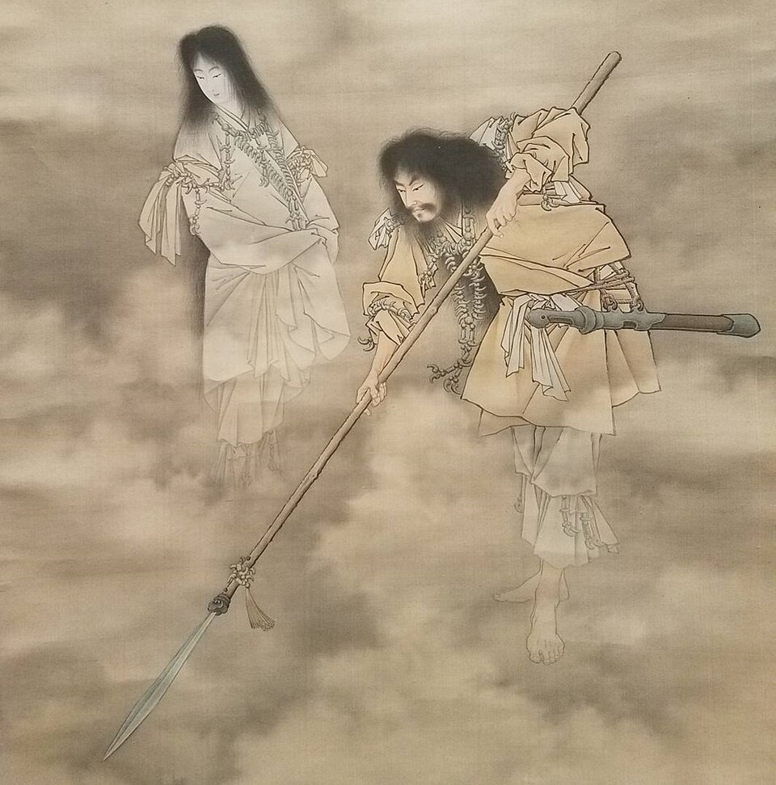
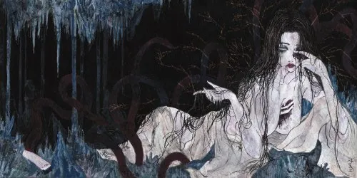
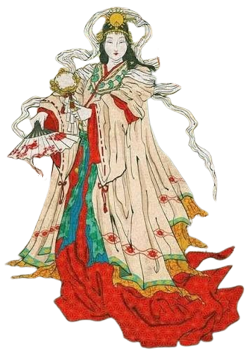

Japanese mythology is a rich universe based primarily on Shinto and Buddhism, documented in texts such as the Kojiki and the Nihon Shoki (which sometimes diverge).
Creation of the universe
The Tenchi-kaibyaku, or "Creation of Heaven and Earth," begins in a formless, primordial chaos. As heaven and earth began to separate, the lighter elements rose to form Takamagahara (the High Plain of Heaven) and the denser ones formed the earth; at this moment, the first Kami (deities) emerged.

After several generations of gods, the siblings and spouses Izanagi ("he who invites") and Izanami ("she who invites") emerged. To give form to the solid world, the celestial gods entrusted them with a jeweled spear, the Amenonuhoko. By plunging the spear into the salty waters of the primordial ocean and stirring them, Izanagi and Izanami formed the first island, Onogoro-shima. The couple descended to the island and, through a sacred ritual of union, gave birth to the other islands of the Japanese archipelago, as well as countless deities associated with nature, mountains, seas, and rivers.

The creation of the material world took a tragic turn when Izanami died while giving birth to the fire god, Kagutsuchi. Desperate, Izanagi traveled to Yomi (the land of the dead) to rescue her. Upon finding her in a state of decomposition, he fled and blocked the passage with a massive boulder, permanently separating the living from the dead. To cleanse himself of the impurity of death, Izanagi bathed in a river. From this purification ritual, the three most important gods of Japanese mythology were born: Amaterasu (the Sun goddess) from his left eye, Tsukuyomi (the Moon god) from his right eye, and Susanoo (the storm god) from his nose.
Kamis

Izanami and Izanagi: they are the gods of creation
Amaterasu: goddess of the sun and the universe
Tsukiyomi and Susanoo: gods of the moon and the storm (respectively)
Inari: the fox kami, he uses foxes as his earthly messengers and represents the most
important aspects of Japan, such as rice, tea, fertility, love, and success.
Shitenno: they are four terrifying gods originating from Hinduism and known for
protecting Japanese Buddhist temples; each god is associated with a direction, a season, a virtue, and
an element.
Raijin and Fujin: gods of lightning and wind (respectively)
Hachiman: patron of warriors
Jizo: guardian of children and childbirth
Agyo and Ungyo: as guardians of Buddha, Agyo symbolizes violence and Ungyo symbolizes
strength.
Kannon: goddess of mercy
Benzaiten: The goddess of all that flows—whether words, eloquence, or music. In the
popular imagination, she is also associated with love and is one of Japan's seven goddesses of good
fortune.
Yebisu: god of fishermen and good fortune, and guardian of the health of young
children
Tengu: a bird monster
Sugawara no Michizane: It is not a kami with a specific virtue, but rather the spirit
of someone who truly existed; its defining characteristic is a thirst for vengeance.
Taira no Masakado: immortalized/acclaimed samurai
How this reaches us
Japanese mythology has spread across the globe thanks to the popularity of manga and anime, as well as famous Japanese video games—or games that draw upon Japanese culture for inspiration.
Examples of famous works that use this mythology as a reference are, Power Rangers, Avatar Legends, Pokémon, Jujutsu Kaisen, Demon Slayer, movies from Studio Ghibli, etc.